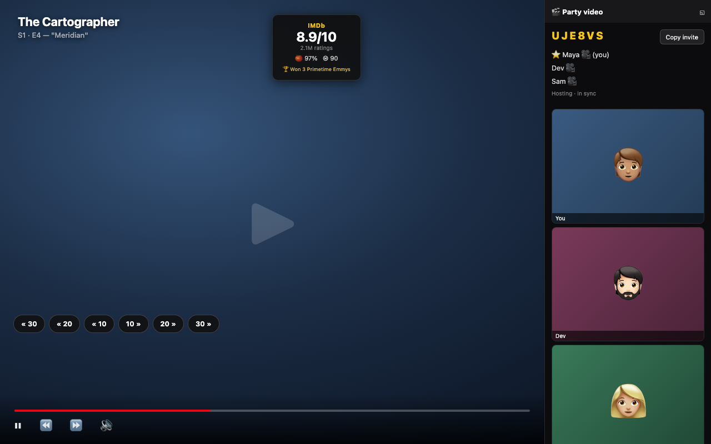
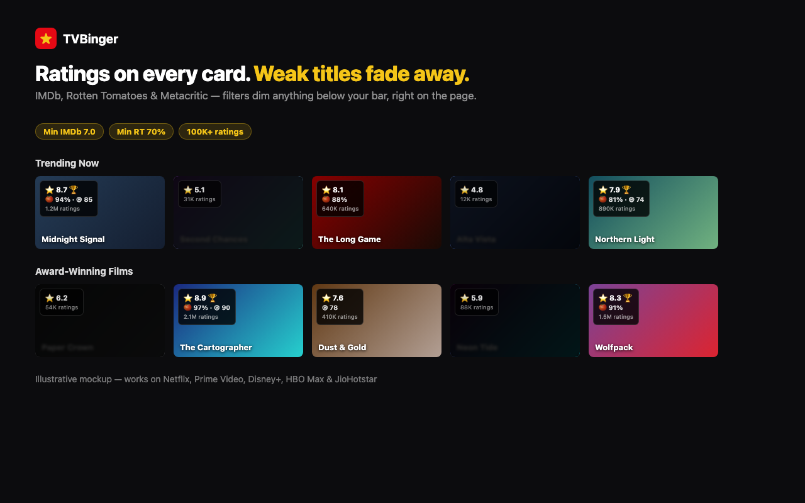
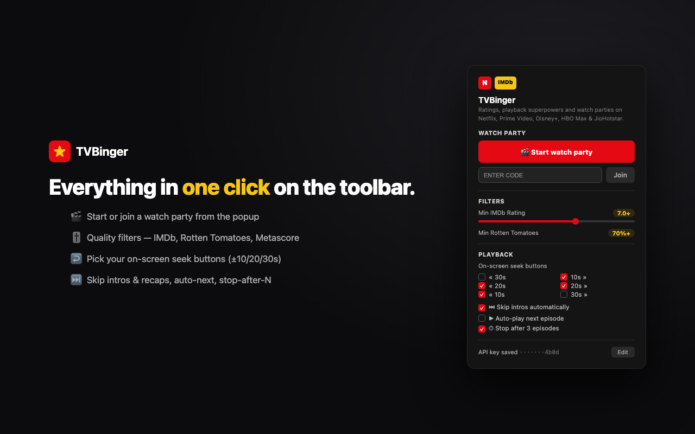

Find it. Watch it together.
IMDb, Rotten Tomatoes and Metacritic ratings on every thumbnail — plus the playback controls streaming apps forgot, and watch parties with voice & video so you never watch alone. On Netflix, Prime Video, Disney+, HBO Max & JioHotstar.
No account required. Works alongside your existing Netflix, Prime Video, Disney+, HBO Max and JioHotstar logins.Everything shows up right where you're already browsing. No new tabs, no copy-pasting titles into IMDb.
On every carousel thumbnail, the video player, and hover-preview cards.
IMDb always, plus optional Rotten Tomatoes and Metacritic — all from your one free key.
Set a minimum rating, RT %, Metascore, vote count, or awards bar. Anything that doesn't qualify gets dimmed right on the page.
Auto-clicks the site's own skip buttons the moment they appear. Off by default, never fights you.
Jump −30/−20/−10/+10/+20/+30 seconds with one tap — pick exactly which buttons you want.
Auto-play next episode, and a "stop after N episodes" nudge that checks in before the binge rolls on.
Play, pause and seek in lockstep with friends. One invite link, no accounts — rooms self-destruct when everyone leaves.
Talk while you watch — peer-to-peer, up to 6 people, right in the party panel.
Dock the video call to a rail and let the movie reflow beside it — faces never cover the film.
Real screenshots — this is exactly what shows up on the page.



Beta = we're still tuning it against those sites' layouts — features degrade gracefully rather than breaking the page.
One free API key from OMDb powers the ratings — no account of your own needed.
One click from the Chrome Web Store — free, no account.
Click the toolbar icon, tap "Get a free key →" (~1,000 lookups/day), paste it in.
Browse Netflix or Prime — badges appear instantly, filters dim what doesn't qualify.
Click the toolbar icon → Start watch party.
Send it to friends — it drops them straight into your show, already in sync.
Talk while you watch. Pin the call to the side if you like.
Yes. You'll need your own free OMDb API key (1,000 lookups/day), but the extension itself has no cost and no premium tier.
No — Chrome extensions only run on desktop Chrome (and Chromium-based browsers like Edge or Brave).
No. Ratings are fetched quietly in the background and cached per session, so scrolling back to a title you've already seen costs nothing.
So your lookups aren't sharing a quota with every other user of the extension — OMDb's free tier is per-key, not per-app.
No. Only the title you're currently viewing is sent to OMDb, and nothing is logged or stored beyond your own browser. See the privacy policy below.
Yes — everyone in a party needs the extension installed and access to the title on their own streaming account. The invite link walks them through it.
Netflix and Prime Video fully; Disney+, HBO Max and JioHotstar in beta — features there degrade gracefully rather than breaking the page.
Last reviewed alongside the current release.
This extension does not collect, sell, or share any personal information. There are no accounts, no analytics, no telemetry, and no tracking of any kind. It has two layers with different footprints — the always-on ratings core, and optional features that only do anything when you explicitly use them.
While you browse a supported streaming site (Netflix, Prime Video, Disney+, HBO Max,
JioHotstar), the extension reads the title of whatever show or movie is currently on
screen and looks it up on OMDb (omdbapi.com) to display its IMDb, Rotten Tomatoes and
Metacritic scores, vote count, and awards. The title — and, when available, its release
year and whether it's a movie or series — is sent to omdbapi.com over HTTPS,
along with your own personal OMDb API key. Rotten Tomatoes and Metacritic scores come
bundled in OMDb's response — no additional service is contacted for them.
omdbapi.com is ever contacted.Watch parties are off until you click Start a party or open an invite link. While in a party, the extension connects to the party server (a developer-deployed Cloudflare Worker) over an encrypted WebSocket. What transits: the room code and your chosen display name (no accounts), play/pause/seek commands and playback positions, and the URL/title being watched so late joiners land on the right page. Rooms evaporate about 30 minutes after the last member leaves; nothing is written to a database and no logs of what anyone watched are kept.
Runs only after you click Join voice/video inside a party, which triggers Chrome's standard mic/camera permission prompt (revocable any time). Audio and video travel peer-to-peer between party members via WebRTC — they never pass through the party server, which only relays the connection-setup handshake. Establishing a peer connection contacts Google's public STUN servers to discover your network address — a standard part of how WebRTC works.
The extension stores your settings using Chrome's built-in
chrome.storage.sync API: your OMDb API key, filter and rating-source
preferences, playback toggles, and (if set) a custom party-server URL. This syncs
privately across your own signed-in Chrome browsers via your Google account — the
developer never receives or sees this data. Transient party/binge state lives in
per-tab session storage and vanishes when the tab closes.
Rating data comes from OMDb (The Open Movie Database) — omdbapi.com. The party server runs on Cloudflare Workers. WebRTC setup uses Google's public STUN servers.
This is an independent, unofficial project. It is not affiliated with, endorsed by, or sponsored by Netflix, Amazon, Prime Video, Disney, Warner Bros. Discovery, JioStar, or IMDb.